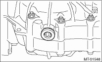
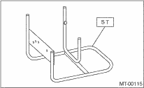

MANUAL TRANSMISSION AND DIFFERENTIAL(5MT) > Preparation for Overhaul
1. Clean oil, grease, dirt and dust from the transmission.
2. Using the TORX ® BIT T70, remove the drain plug, and drain the transmission gear oil completely.
3. Using the TORX ® BIT T70, tighten the transmission gear oil drain plug.
NOTE:
Use a new gasket.
Tightening torque:
44 N·m (4.5 kgf-m, 33 ft-lb) (Aluminum gasket)
70 N·m (7.1 kgf-m, 52 ft-lb) (Copper gasket)

4. Attach the transmission to the ST.
| ST 499937100 | TRANSMISSION STAND |

5. Apply oil to rotating parts before assembly.
6. All disassembled parts, if to be reused, should be reinstalled in the original positions and directions.
7. Gaskets, lock washers and lock nuts must be replaced with new parts.
8. Use liquid gasket to the specified areas to prevent leakage.